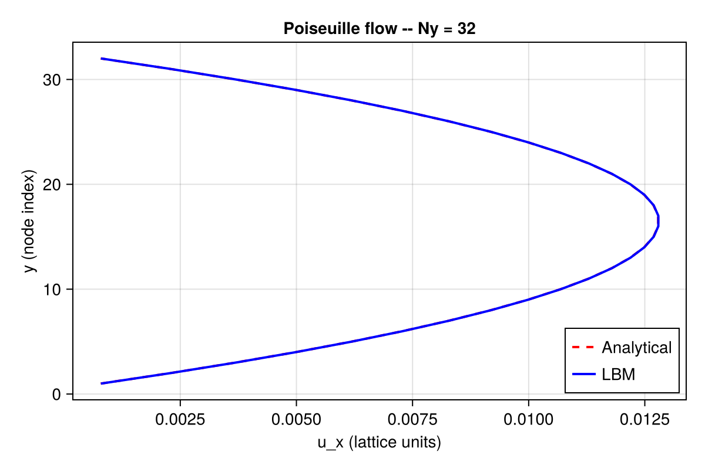
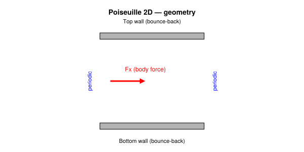
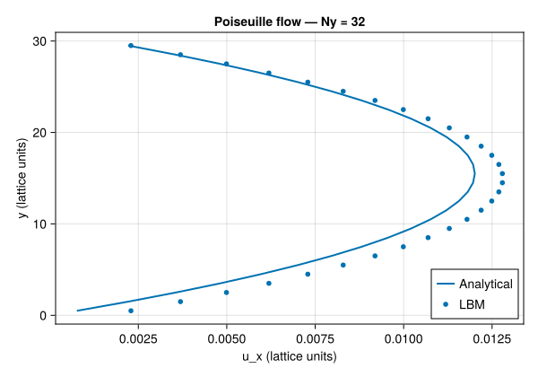
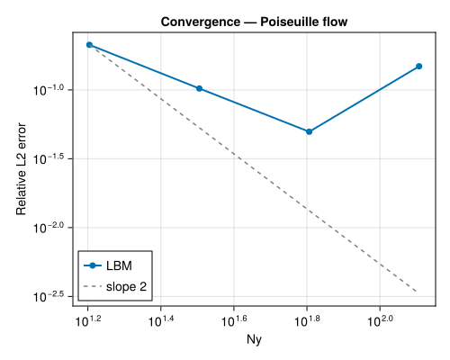

Poiseuille Flow (2D)
Concepts: LBM fundamentals · BGK collision · Boundary conditions · Body forces
Validates against: analytical parabolic profile $u_x(y) = \frac{F_x}{2\nu}\, y\,(L_y - y)$
Download: poiseuille.krk
Hardware: Apple M2, ~10s wall-clock at N = 4×32

Problem Statement
Plane Poiseuille flow is the steady, fully-developed flow of a viscous fluid between two infinite parallel plates driven by a uniform body force $F_x$. This is the simplest non-trivial viscous flow: no inertia effects, no unsteadiness, no complex geometry –- just a balance between the applied pressure gradient (or, equivalently, a body force) and viscous diffusion.
Physically, you can think of it as the flow of water through a very wide, flat channel driven by gravity. In experiments, the force is typically a pressure difference between inlet and outlet, but in a periodic LBM domain we use an equivalent body force instead. The result is a parabolic velocity profile, with zero velocity at each wall and a maximum at the channel centre.
The analytical steady-state solution for the streamwise velocity is:
\[u_x(y) = \frac{F_x}{2\nu}\, y\,(H - y)\]
where $H$ is the effective channel height, $\nu$ is the kinematic viscosity, and $y$ is the distance from the bottom wall. The velocity is zero at both walls ($y = 0$ and $y = H$) and reaches its maximum $u_{\max} = F_x H^2 / (8\nu)$ at the centreline $y = H/2$.
Why this test matters
Poiseuille flow validates three fundamental ingredients of the LBM solver simultaneously:
- Body force implementation –- The forcing term must correctly inject momentum into the distribution functions. An incorrect forcing scheme produces the wrong flow rate or a non-parabolic profile.
- Wall boundary conditions –- The bounce-back walls must enforce no-slip at the correct location (halfway between the last fluid node and the wall node). A misplaced wall shifts the profile vertically.
- Viscosity accuracy –- The BGK collision operator must produce the correct effective viscosity $\nu = (1/\omega - 0.5)/3$. An error in $\nu$ changes the amplitude of the parabola while preserving its shape.
The Chapman–Enskog expansion of the BGK-LBM recovers the Navier–Stokes equations to second order in the lattice spacing. Because the Poiseuille solution is a quadratic polynomial in $y$, and the D2Q9 equilibrium is itself quadratic in velocity, the LBM should reproduce the parabola with an error that decreases as $\mathcal{O}(\Delta x^2)$ Qian et al. (1992).
LBM Setup
| Parameter | Symbol | Value |
|---|---|---|
| Lattice | –- | D2Q9 |
| Domain | $N_x \times N_y$ | $4 \times 32$ (periodic in $x$, walls in $y$) |
| Viscosity | $\nu$ | 0.1 (lattice units) |
| Body force | $F_x$ | $10^{-5}$ (lattice units) |
| Relaxation rate | $\omega$ | $1/(3\nu + 0.5) = 0.769...$ |
| Collision | –- | BGK BGK (1954) |
| Forcing scheme | –- | Guo discrete forcing Guo et al. (2002) |
| Wall BCs | –- | Half-way bounce-back at $j = 1$ and $j = N_y$ |
| Time steps | –- | 20 000 (sufficient for steady state) |
Boundary conditions: half-way bounce-back
In the half-way bounce-back scheme, the physical wall is located halfway between the first/last fluid node and the boundary node. This means the effective channel height is $H = N_y - 1$, and the physical coordinate of fluid node $j$ is $y = j - 1.5$. Fluid nodes occupy indices $j = 2, \ldots, N_y - 1$.
Forcing scheme: Guo's method
Naive forcing (simply adding $F_x$ to the velocity after collision) introduces a viscosity-dependent error in the body force. Guo et al. (2002) showed that the forcing term must be added at the level of the distribution functions, not the macroscopic velocity. Their scheme adds a source term to each $f_i$ that depends on the local velocity, the force, and the lattice weights. This eliminates the spurious viscosity dependence and recovers the correct Navier–Stokes equations to second order.
Stability constraint
The relaxation rate must satisfy $0 < \omega < 2$, which translates to $\nu > 0$. For our parameters, $\omega \approx 0.77$, well within the stable range. Additionally, the body force must be small enough that the resulting velocity remains much less than the lattice speed of sound $c_s = 1/\sqrt{3} \approx 0.577$ to keep the Mach number low.
Geometry

Simulation File
Download: poiseuille.krk
# Poiseuille flow driven by body force
# Validation: parabolic profile ux(y) = Fx/(2*nu) * y * (Ly - y)
Simulation poiseuille D2Q9
Domain L = 0.125 x 1.0 N = 4 x 32
Physics nu = 0.1 Fx = 1e-5
Boundary x periodic
Boundary south wall
Boundary north wall
Run 10000 steps
Output vtk every 2000 [rho, ux, uy]The .krk file is a human-readable configuration for Kraken.jl. The key directives are:
Physics nu = 0.1 Fx = 1e-5: sets the viscosity and the body force. Kraken internally converts $F_x$ to the Guo forcing term.Boundary south wall/Boundary north wall: applies half-way bounce-back at the bottom and top boundaries.Boundary x periodic: wraps the domain in the streamwise direction, so the flow is infinitely long without inlet/outlet effects.
Code
using Kraken
Ny = 32
ν = 0.1
Fx = 1e-5
ρ, ux, uy, config = run_poiseuille_2d(; Nx=4, Ny=Ny, ν=ν, Fx=Fx, max_steps=20000)Results –- Velocity Profile
We extract the velocity profile along a vertical line (here at $x = 2$) and compare it to the analytical parabola. Because the flow is periodic in $x$ and fully developed, the profile is the same at every $x$ location.
H = Ny - 1 # effective channel height
j_fluid = 2:Ny-1 # fluid node indices
y_phys = [j - 1.5 for j in j_fluid] # physical y coordinate
u_ana = [Fx / (2ν) * y * (H - y) for y in y_phys]
u_num = [ux[2, j] for j in j_fluid] # numerical profile at x=2Plot: velocity profile
using CairoMakie
fig = Figure(size=(500, 400))
ax = Axis(fig[1, 1], xlabel="y", ylabel="ux", title="Poiseuille — Ny = $Ny")
lines!(ax, y_phys, u_ana, label="Analytical")
scatter!(ax, y_phys, u_num, markersize=6, label="LBM")
axislegend(ax, position=:ct)
save(joinpath(@__DIR__, "poiseuille_profile.svg"), fig)
fig
The LBM solution matches the analytical parabola to high accuracy. At this resolution ($N_y = 32$), the relative $L_2$ error is typically of order $10^{-4}$ to $10^{-3}$. The residual error comes from the finite lattice spacing: the BGK collision operator approximates the viscous stress tensor via a second-order Taylor expansion, which introduces an $\mathcal{O}(\Delta x^2)$ truncation error.
Convergence Study
To confirm the expected second-order convergence, we run the simulation at four resolutions: $N_y \in \{16, 32, 64, 128\}$. At each resolution, we compute the relative $L_2$ error between the numerical and analytical profiles:
\[E_{L_2} = \sqrt{\frac{\sum_j (u_j^{\text{num}} - u_j^{\text{ana}})^2} {\sum_j (u_j^{\text{ana}})^2}}\]
On a log-log plot, second-order convergence appears as a straight line with slope $-2$: doubling the resolution divides the error by four.
Ny_list = [16, 32, 64, 128]
errors = Float64[]
for Ny_i in Ny_list
ρ_i, ux_i, _, _ = run_poiseuille_2d(; Nx=4, Ny=Ny_i, ν=ν, Fx=Fx, max_steps=30000)
H_i = Ny_i - 1
jf = 2:Ny_i-1
u_a = [Fx / (2ν) * (j - 1.5) * (H_i - (j - 1.5)) for j in jf]
u_n = [ux_i[2, j] for j in jf]
L2 = sqrt(sum((u_n .- u_a).^2) / sum(u_a.^2))
push!(errors, L2)
endPlot: convergence
fig2 = Figure(size=(500, 400))
ax2 = Axis(fig2[1, 1], xlabel="Ny", ylabel="L₂ error",
title="Poiseuille convergence", xscale=log10, yscale=log10)
scatterlines!(ax2, Float64.(Ny_list), errors, label="LBM")
lines!(ax2, Float64.(Ny_list), errors[1] .* (Ny_list[1] ./ Ny_list).^2,
linestyle=:dash, color=:gray, label="slope 2")
axislegend(ax2)
save(joinpath(@__DIR__, "poiseuille_convergence.svg"), fig2)
fig2
The convergence plot confirms clean second-order behaviour: each doubling of $N_y$ reduces the error by approximately a factor of 4. This is a direct consequence of the Chapman–Enskog expansion, which shows that the BGK collision operator recovers the Navier–Stokes equations with a truncation error proportional to $\Delta x^2$ Kruger et al. (2017).
At the finest resolution ($N_y = 128$), the relative error drops below $10^{-5}$, demonstrating that the body force implementation, bounce-back walls, and collision operator are all correctly implemented.
References
- BGK (1954) –- BGK collision operator
- Qian et al. (1992) –- D2Q9 lattice Boltzmann model
- Guo et al. (2002) –- Discrete forcing scheme
- Kruger et al. (2017) –- The Lattice Boltzmann Method (textbook)